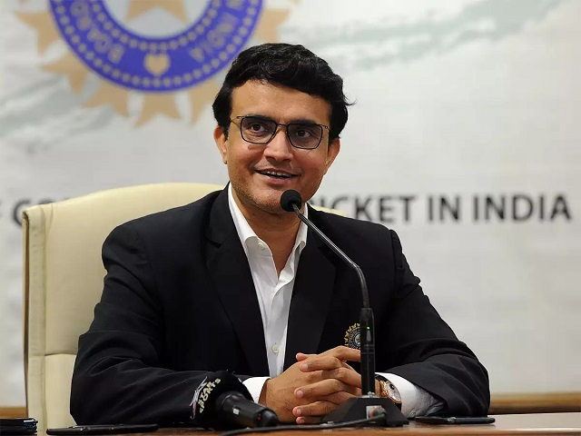

Famous Players
BackCristiano Ronaldo

Born: 5 February 1985 (age 37 years), Hospital Dr. Nélio Mendonça, Funchal, Portugal
Cristiano Ronaldo dos Santos Aveiro GOIH ComM is a Portuguese professional footballer who plays as a
forward for Premier League club Manchester United and captains the Portugal national team.
List of career achievements by Cristiano Ronaldo
- FIFA Puskás Award(2009)
- UEFA Men's Player of the Year Awardr(2014)
- The Best FIFA Man's Player(2017)
- Ballon d'Or Dream Team Award (2020)
Lionel Messi

Born: 24 June 1987 (age 35 years), Rosario, Argentina
Lionel Andrés Messi, is an Argentine professional footballer who plays as a forward for Ligue 1 club
Paris Saint-Germain and captains the Argentina national team.
List of career achievements by Lionel Messi
- FIFA World Player(2009)
- World Cup Golden Ball(2014)
- Laureus World Sports Awards(2019)
- MVP Copa América(2021)
Sachin Tendulkar

Born: 24 April 1973 (age 49 years), Mumbai
Sachin Ramesh Tendulkar AO BR is an Indian former international cricketer who captained the Indian national team.
He is regarded as one of the greatest batsmen in the history of cricket. He was a right-handed top-order bastmen in
the Indian Cricket Team.
List of career achievements by Sachin Tendulkar
- Arjuna Award (1994)
- The Khel Ratna Award(1997)
- Padma Vibhushan Awards(1999)
- Bharat Ratna Award(2013)
Sourav Ganguly

Born: 9 July 1972 (age 50 years), Behala, Kolkata
Sourav Chandidas Ganguly, affectionately known as Dada, is an Indian cricket administrator, commentator and former
national cricket team captain who served as the 35th President of the Board of Control for Cricket in India. He is
popularly called as Maharaja of Indian Cricket.
List of career achievements by Sourav Ganguly
- Padma Shri,Rammohan Roy Award(2004)
- Player Of Match Awards(2007)